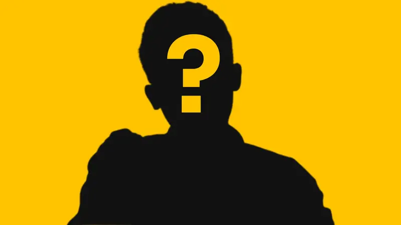
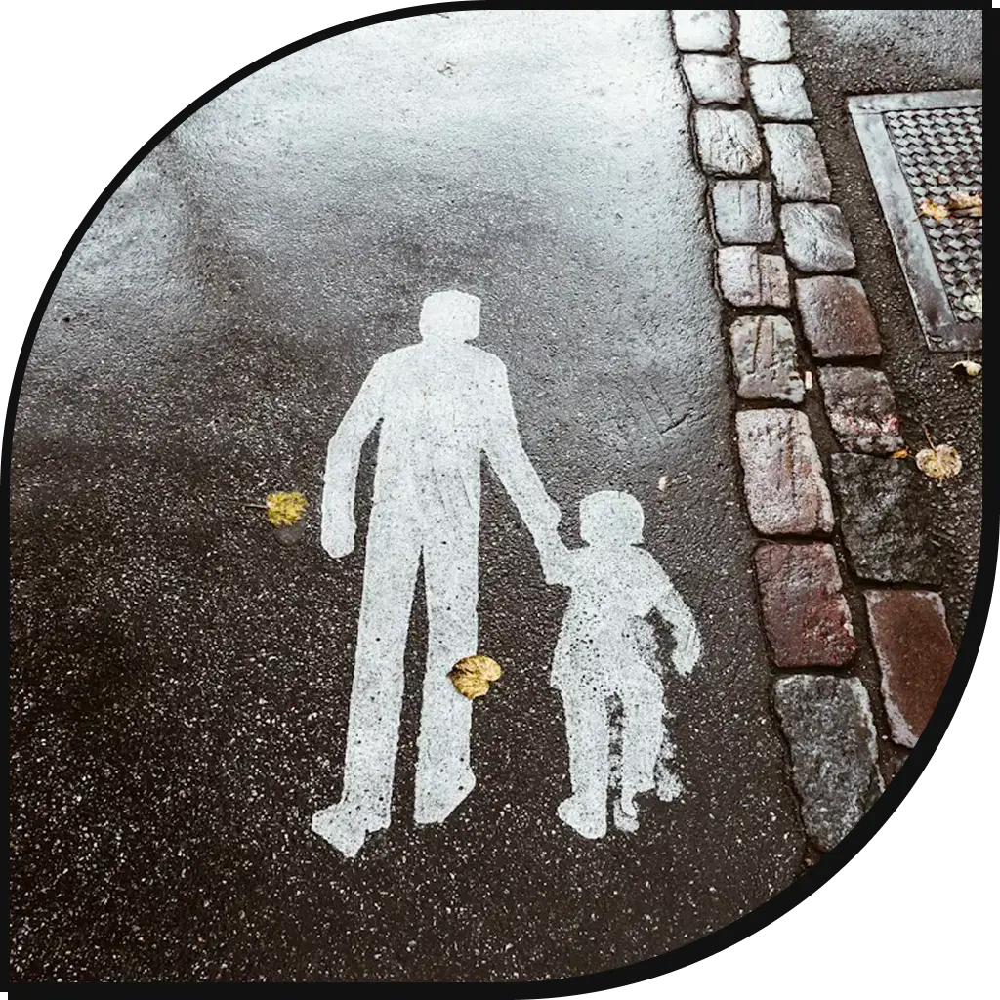
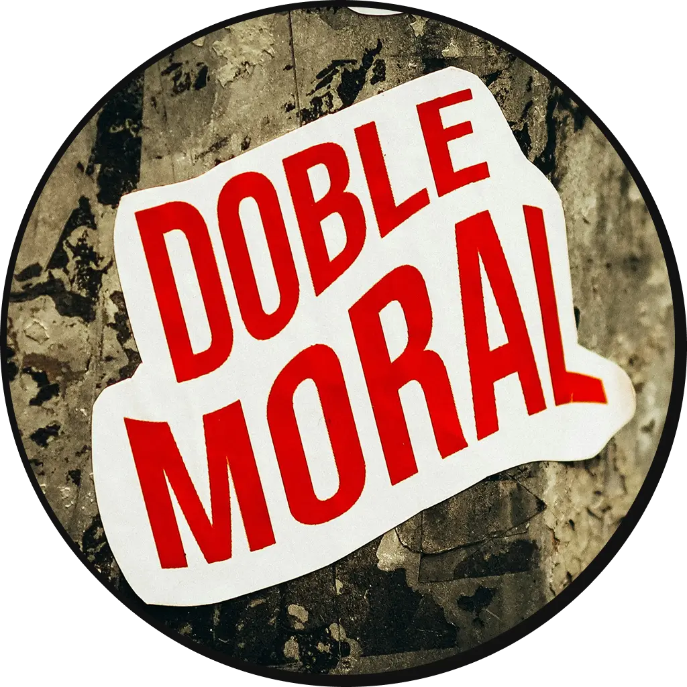

My Ethical
Identity Profile
My creative format for GE8 Ethics
Who am I as a moral person? Scroll to begin
WHO AM I?

Click/Tap the card to open...
Hi there! I'm Lloyd Christian Damalerio and I am 19 years old. Currently enrolled as a 2nd year student under BS Information technology.
THREE WORDS TO DESCRIBE MYSELF:
HUMBLE. ACTIVE.
DISCIPLINED.
Click/Tap the card to close...
My Moral Compass
Here are the 5 core values guiding my decisions. Scroll horizontally to explore.
Realistic
Realistic allows me to properly weigh in the positive and negative outcomes of my decisions.
Empathy
Empathy allows me to weigh in the possible impact of my decisions to others.
Autonomy
Autonomy ensures that my personal (not group decision) decision is purely thought by me and it was not influenced by others.
Honesty
Honesty allows me to know which decisions is the right thing to do.
Authenticity
Authenticity allows me to made decision that aligned with my true self and my values.
THAT ONE EXPERIENCE
How this experience shaped my character?
Keep scrolling
THE PROBLEM
Throughout my life, there have been some people who consistently test my peace and autonomy. This situation has become so intense that these individuals made me feel overwhelmed and terrified. However, I kept saying 'yes' to their decisions and silencing myself because I might hurt their feelings, start to reject or abandon them, or create fake gossip to avoid them. I felt as if I trapped myself in the dilemma between wanting to seek peace and maintaining my autonomy.
THE SOLUTION
That's when I encourage myself to break the silence and end once and for all. I started by saying 'no' to some of their decisions, using the grey rock method whenever they asked unwanted questions, becoming distant with them, and eventually cutting them off.
THE RESULT
As a result, it gave me relief, knowing that all of those overwhelming experiences will cease to exist. It attained my peace, knowing that there will be no distraction and stress, as well as autonomy, as I am able to formulate my thoughts and decisions effectively without being influenced by them. Initially, I felt guilty about this decision because they tried their best to come back as a friend. However, I resisted, as I realized that it was their attempt to regain control over me.
THE LESSON
After countless rants, YouTube and Facebook videos, and even resorting to AI, there's one thing that most of them suggested: building a healthy boundary with others. Many of them stated that setting boundaries meant you rebuilt your self-trust that had eroded from that situation. It filters your future relationships with other people, reducing stress and anxiety from constant people pleasing and preserving your energy for growth. Now, it influences me that if I recognize those patterns, I immediately assert my boundaries and stay away as much as I can.
ETHICAL DILEMMA
How I handle this scenario?
Keep scrolling
THE PROBLEM
You are developing software for a client. While working on the project, you find a copyrighted source code online that perfectly solves the problem. The client will never know if you copy and use it without permission. What would you do?
THE SOLUTION
I'll read and follow their licensing agreement, as they may explicitly state that it is allowed to use and modify their source code with the need for attribution through a license or notice file. Some source code may possess an open-source license like MIT, BSD 2-Clause, or Apache License 2.0. However, I might consider finding alternative source code if the licensing agreement involves paying royalties (a.k.a. money).
THE RESULT
Not only does it save time figuring out how to handcode a feature or a solution, but it also saves me and my team from legal trouble because of copyright infringement.
THE VALUE
There are 3 values demonstrated in this situation: EMPATHY because I recognize the impact of my decision towards the creator; HONESTY because I claimed that the code I wrote was built with someone else's source code; and RESPECT for those creators behind the source code; they spent their blood, sweat, and tears just so that the source code was made available.
FOR ME,
ETHICS IS....
a set of guidelines that guides every one of us, including myself, to do the right thing. Think of it as a parent who always reminds and reprimands you. Ethics are done this way by reminding you that every decision you make is either right or wrong. If that action is right, then you can replicate it. If wrong, reflect on it and never do that again..

AT THE END OF ETHICS COURSE,
I hope to become a person who embodies the ideal ethical person. It's an ideal person whose every action reflects the moral values described in 'Moral Compass,' the lessons of the 'That One Experience' activity, and the thought process demonstrated in 'Ethical Dilemma.' Likewise, it enables one to realize whether the actions or decisions are right or wrong. When right, it can be replicated; if wrong, then a lesson is learned, and it cannot happen again.

"Each time you set a healthy boundary, you say 'yes' to more freedom."
— Nancy Levin, Life Coach